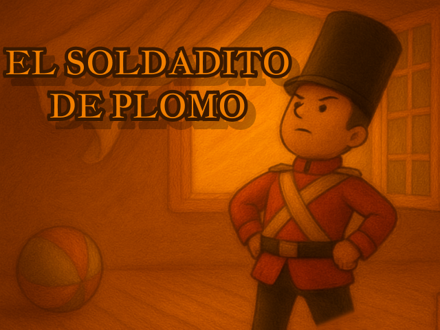
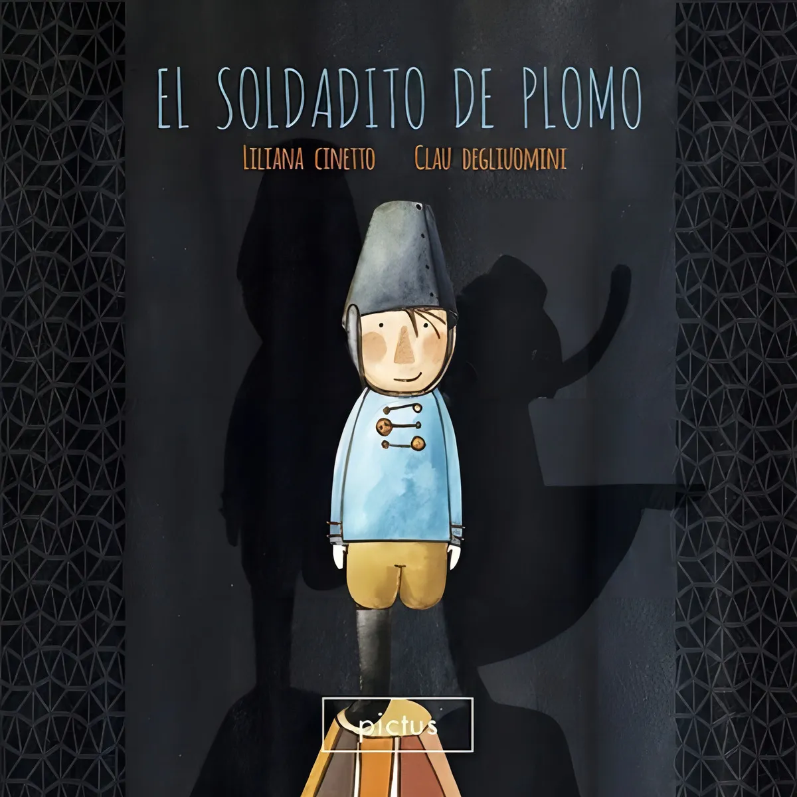
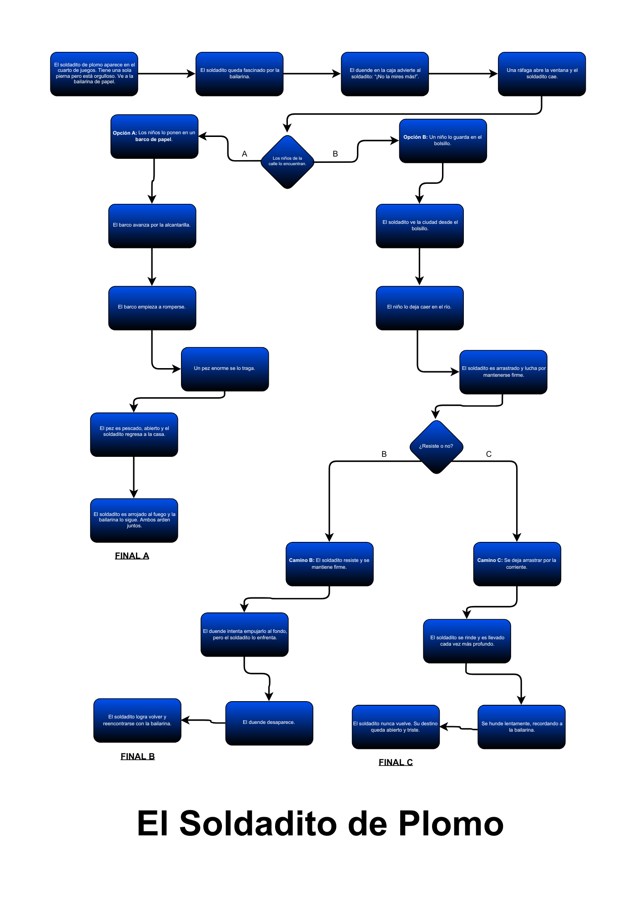
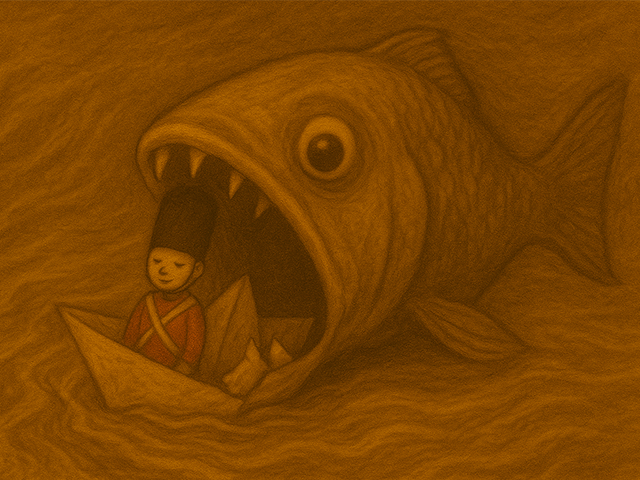
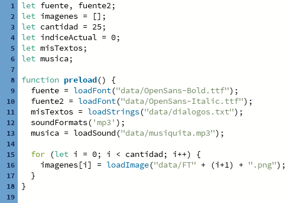

Se realizó la trama de nuestra aventura grafica con la ayuda de la IA, para encontrarle un sentido, funcion y objetivo acorde a la temática.

Integrantes
Sebastián Ibarra
Joaquin Valcarcel
Sobre la temática
La temática elegida para nuestra aventura gráfica fue “El Soldadito de Plomo”. Con la utilizacion de inteligencia artificial como herramienta.
¿Para que se utilizó la IA?

El Soldadito de Plomo
es un cuento de hadas escrito por el escritor danés Hans Christian Andersen, publicado por primera vez el 2 de octubre de 1838. La historia narra la aventura de un soldado de juguete de plomo que, al ser el último fundido, tiene solamente una pierna. Este soldadito se enamora de una bailarina de papel que también se sostiene sobre una sola pierna. A pesar de las adversidades, incluyendo ser arrojado por la ventana por un duende celoso, sufrir naufragios en un barco de papel, ser tragado por un pez y finalmente arder en la chimenea junto a su amada, el soldadito demuestra valentía y perseverancia. El cuento explora temas como el amor, la fidelidad, la vulnerabilidad y la aceptación de las limitaciones personales, simbolizadas por la cojera del protagonista. Aunque el final original es trágico, con la muerte de ambos personajes y la aparición de un corazón de plomo y una lentejuela entre las cenizas, existen versiones contemporáneas que ofrecen desenlaces más felices. El cuento ha sido ampliamente adaptado en diversas formas, incluyendo películas, obras de teatro y música, destacando su influencia en la cultura popular.
Proceso de produccion con IA
Nuestro proceso de producción, a través de herramientas de inteligencia artificial:
Con la IA, generamos dialogos para nuestra historia. Utilizamos un archivo txt, en el que cada diálogo era un renglón distinto. Cada renglón tiene un índice, el cual utilizamos para la colocación de los textos en la aventura gráfica:

Con la trama y diálogos listos, construimos nuestro árbol de navegación. Este cuenta con el desarrollo de la historia, hasta el momento de la primera decisión, ahí se bifurca en dos caminos, uno final y uno que sigue. Esta lógica se vuelve a repetir, aparece la decisión y se vuelve a bifurcar en dos caminos que estos son finales.
Una vez hecho esto, procedimos a generar con varias IA distintas, las imágenes para cada una de las pantallas que íbamos a utilizar.
Algunas de las imagenes generadas:





Proceso de Programacion
1. Inicialización y Carga de Recursos
Arrancamos declarando nuestras variables globales esenciales. Usamos variables para cargar los textos misTextos, la música musica y las tipografias. También tenemos la variable imagenes, que es un arreglo para cargar las imágenes, y las variables cantidad e indiceActual, cruciales para saber cuántas imágenes hay y en qué pantalla nos encontramos.
En la función preload(), procedemos a la carga de nuestros diálogos, fuentes y sonidos. Para las imágenes, utilizamos un ciclo for que itera sobre un arreglo. Esto nos permite cargar todas las imágenes secuencialmente usando los índices, lo que luego facilita enormemente el armado de las secuencias de nuestras pantallas.

2. Estructura y Control de Pantallas
Para el armado de la aplicación, llamamos a la función dibujarPantalla y a escribirTextos en el draw(). Asi dibujamos las pantallas y los textos.


Esta función está acompañada de una serie de condicionales if / else if que se basan en el indiceActual para determinar qué botón dibujar: Inicio, Siguiente, Reiniciar, Decisión, o Fin.

Para que el flujo de la historia siga su orden normal, la acción por defecto es sumarle uno al índice de la imagen (con el botón Siguiente), hasta que se alcanza un índice en el que se deben dibujar los botones de decisión.

Utilizamos indiceActual para indicarle al programa con case, lo que debe hacer en pantalla 0 que es iniciar la aventura, y que con los indices de las pantallas finales, dirigirlos al 24 que son los creditos. En este mismo hacemos que se reinicie el programa llevandolo al 0.

3. Lógica de Interacción y Bifurcación
La lógica de interacción se gestiona en la función logicaBoton(). En los puntos de decisión, empleamos la estructura switch que trabaja con el indiceActual. Este switch define un arreglo estadoFinal con los índices de destino para las dos posibles opciones.

Luego, mediante condicionales que evalúan la posición del click del ratón, se determina si el usuario eligió la opción A o la opción B. Esto nos permite actualizar el indiceActual y dirigir al usuario a un camino narrativo o al otro, asegurando la bifurcación de la trama.

Resultado final
Después de muchas horas se llegó a este resultado: una aventura gráfica interactiva, la cual consta de 3 finales distintos dependiendo de las decisiones que hayas tomado.